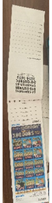
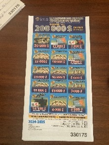
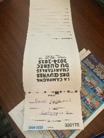

This guide is meant to show you how to properly fill in the state lottery tickets… Tickets can be sold by the book or individually. The draw takes place on April 4th, 2025. Tickets must be sold in Quebec but may be bought by people living elsewhere (see FAQ below). Purchasers must be 18 years old or more.
1st Aylmer deadline: please return all ticket stubs by the last meeting in December.
The proceeds of this fundraising event are as follows:
60% of all sales will remain with 1st Aylmer Scouts.
40% is used to fund the prizes and cover costs of making the booklets.
Details can be found on the KoC web site: Knights of Columbus charity raffle (in French)
1. When opening the booklet, you will see the image below, do not detach the cover of the ticket book from the ticket stubs. The stubs are where the purchaser fills in their name and phone number. Do not fill in the cover of the booklet: this is meant for the Knights of Columbus council to complete.

2. The portion of the ticket has a perforated line below the purchaser information, detach the bottom portion: this should be given to the purchaser and needs to be presented if the ticket is a winner. The remainder of the ticket book is returned to Scouters.


Q: Can Ottawa residents buy these tickets?
A: Yes. Quebec law says these tickets must be sold in Quebec. However, as long as they are sold in Quebec, they can be purchased by residents of other jurisdictions and the prizes can be won by them.